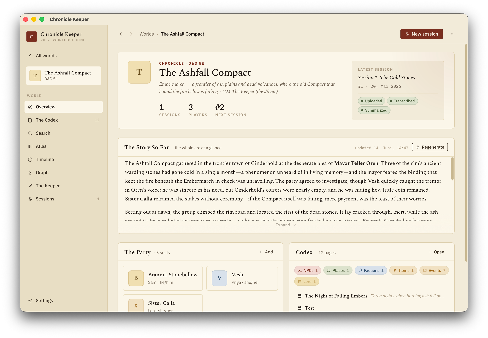

Getting started
A local-first worldbuilding workspace for your campaign — an AI-assisted wiki, maps and a timeline, with session recordings folding in as notes. Here's how to get going.
Chronicle Keeper is a desktop app for building and running your tabletop world. Your campaign is a wiki of Markdown pages you own — NPCs, places, factions, lore — linked together, pinned on maps and plotted on a timeline, with the Keeper (an AI that has read all of it) to answer questions and keep the canon current. It also turns Craig Bot session recordings into clean notes that fold back into your world. Everything heavy runs on your own machine; you only reach the internet to download the app, the speech model (once), and to call a cloud LLM if you pick one over a local model.
You don't need to be technical. If you can install an app and copy-paste a key, you can run Chronicle Keeper. Start with Worlds & pages to learn the wiki, or the recordings guide for session notes.

What you'll need
- A Mac, Windows PC, or Linux machine.
- An LLM for the Keeper and the writing — either Ollama running locally (free) or an API key from a cloud provider.
- Optional, for session notes: a Craig Bot recording — the ZIP it emails you, one audio track per speaker. (How Craig works →)
Quick start
-
Install the app
Grab the installer for your operating system from the Releases page. First launch shows a one-time "unknown developer" prompt — that's expected.
-
Choose your LLM in Settings
Open Settings and either point it at a local Ollama server or paste a cloud API key. Keys never leave your machine.
-
Create your world
Start a fresh world (a portable folder on your disk) or open an existing one — even an Obsidian vault. Add your first pages for the people and places that matter, and ask the Keeper anything.
-
Optional: add a session recording
Start a session and drop in your Craig ZIP, then label which track is which player. On the very first transcription the speech model (Parakeet TDT v3) downloads once; after that every track is transcribed on-device.
-
Summarize & export
Generate the summary with your chosen LLM, give it a read, then export to Markdown with Obsidian frontmatter.
The app itself is small, but the speech model is a few hundred MB and downloads once on your first transcription. After that it's reused and you can work fully offline.
Where to go next
Worlds & pages
Build your campaign wiki — pages, wikilinks, infoboxes — files-as-truth on your disk.
The Keeper
The AI that reads your whole world and keeps the codex current, under your control.
LLM setup
Run Ollama free, or get an API key from Anthropic, OpenAI, Groq and friends.
Recordings & transcripts
Turn a Craig recording into a transcript and summary, then fold it into your world.